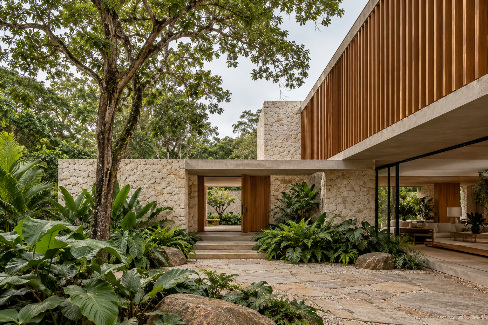
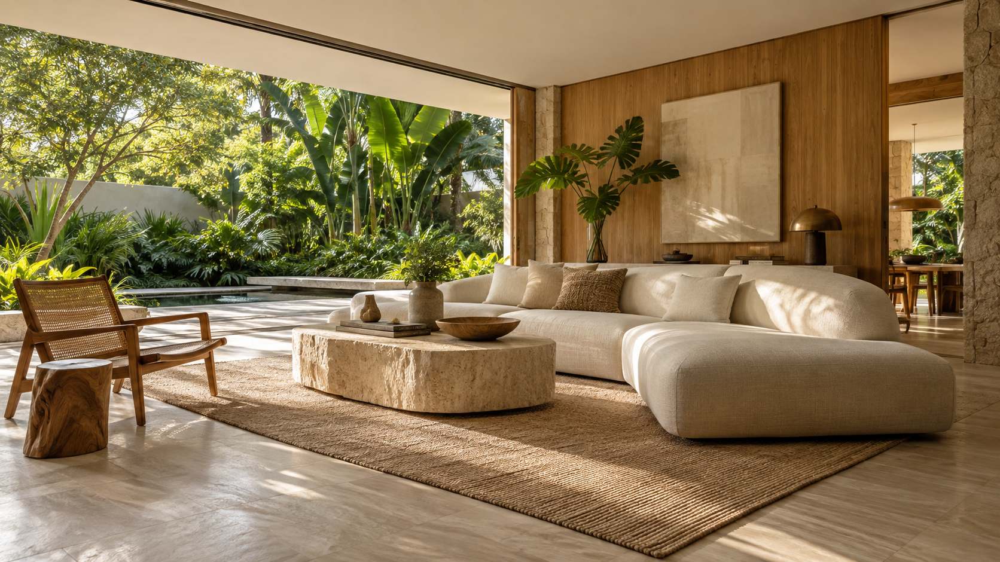
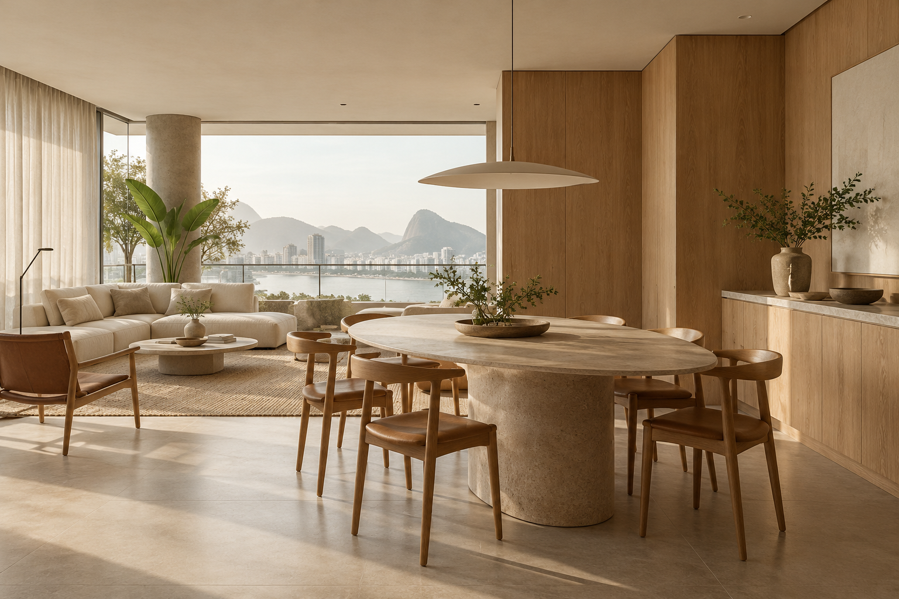

01 / CASA
Casa entre jardins
Arquitetura residencial
Um encontro entre casa e natureza

ARQUITETURA & INTERIORES · BRASIL
O espaço para viver
mais perto do essencial.
O conforto mora
nos detalhes.
Desenhamos casas e interiores a partir de uma escuta atenta, da beleza dos materiais e das pequenas coisas que fazem um lugar ser seu.
Uma seleção de ideias para morar com mais presença, conforto e naturalidade.

Arquitetura residencial
Um encontro entre casa e natureza

Interiores
Leveza no cotidiano
Da primeira luz da manhã ao último café do dia.
f.Cada projeto começa com uma conversa. Entender rotinas, desejos e maneiras de viver é o que nos permite desenhar espaços com sentido.
Com atenção à luz, às proporções e aos materiais, buscamos criar ambientes serenos, feitos para acompanhar a vida ao longo do tempo.
Conheça nossa atuação ↗Cada projeto é uma oportunidade de criar um lugar que faça sentido para quem vive nele.
Casas pensadas a partir do terreno, da luz e da vida de cada família.
Ambientes que equilibram conforto, materiais e a personalidade de quem mora.
Novas possibilidades para espaços que já fazem parte da sua história.
Conte para nós o que você imagina para a sua casa.